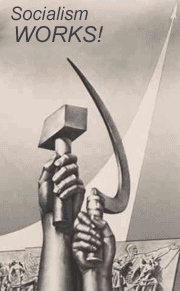
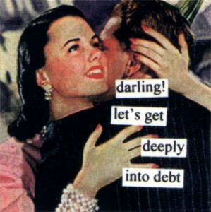

<?xml version="1.0" encoding="UTF-8"?>
<rss version="2.0"
	xmlns:content="http://purl.org/rss/1.0/modules/content/"
	xmlns:wfw="http://wellformedweb.org/CommentAPI/"
	xmlns:dc="http://purl.org/dc/elements/1.1/"
	xmlns:atom="http://www.w3.org/2005/Atom"
	xmlns:sy="http://purl.org/rss/1.0/modules/syndication/"
	xmlns:slash="http://purl.org/rss/1.0/modules/slash/"
	>

<channel>
	<title>Chronosynclastic Infundibulum &#187; economy</title>
	<atom:link href="http://www.semanticoverload.com/tag/economy/feed/" rel="self" type="application/rss+xml" />
	<link>http://www.semanticoverload.com</link>
	<description>The world through my prisms</description>
	<lastBuildDate>Thu, 07 Apr 2011 17:36:17 +0000</lastBuildDate>
	<language>en-US</language>
	<sy:updatePeriod>hourly</sy:updatePeriod>
	<sy:updateFrequency>1</sy:updateFrequency>
	<generator>http://wordpress.org/?v=3.5</generator>
		<item>
		<title>The United States of socialism</title>
		<link>http://www.semanticoverload.com/2008/09/16/the-united-states-of-socialism/</link>
		<comments>http://www.semanticoverload.com/2008/09/16/the-united-states-of-socialism/#comments</comments>
		<pubDate>Tue, 16 Sep 2008 19:42:32 +0000</pubDate>
		<dc:creator>Semantic Overload</dc:creator>
				<category><![CDATA[discussion]]></category>
		<category><![CDATA[economics]]></category>
		<category><![CDATA[US]]></category>
		<category><![CDATA[agriculture]]></category>
		<category><![CDATA[art]]></category>
		<category><![CDATA[arts]]></category>
		<category><![CDATA[bailout]]></category>
		<category><![CDATA[economy]]></category>
		<category><![CDATA[Fanny May]]></category>
		<category><![CDATA[Freddie Mac]]></category>
		<category><![CDATA[S&L crisis]]></category>
		<category><![CDATA[socialism]]></category>
		<category><![CDATA[subsidy]]></category>

		<guid isPermaLink="false">http://www.semanticoverload.com/?p=226</guid>
		<description><![CDATA[The nationalization of Freddie Mac and Fanny May marks a major shift in the US policy of free-market, deregulated economy (to a more socialist policy), or does it? With my rant against the the bailout out of the way, lets see if this really is something different that the US government has had to do [...]]]></description>
				<content:encoded><![CDATA[<p><a href="../../../wp-content/uploads/2008/09/socialism.gif"></a>The nationalization of <a title="Freddie Mac and Fanny May have been nationalized" href="http://www.guardian.co.uk/business/2008/sep/07/freddiemacfanniemae">Freddie Mac and Fanny May</a> marks a major shift in the US policy of free-market, deregulated economy (to a more socialist policy), or does it? With <a title="Rant against Freddie Mac and Fanny May buyout" href="../../../2008/09/16/paying-for-someone-elses-mortgage/index.html">my rant against the the bailout</a> out of the way, lets see if this really is something different that the US government has had to do to save its skin.</p>
<p>The answer is actually &#8220;No&#8221;! The US has a noteworthy history of socialistic policies:</p>
<ol>
<li><span style="text-decoration: underline;"><em><strong>Agricultural subsidy</strong></em></span>: Since 1933, the US government has been <a title="Agricultural subsidies" href="http://en.wikipedia.org/wiki/Agricultural_subsidy#United_States">subsidizing its agriculture</a>. Even though it marginalizes small farmers and mostly serves the agri-business gaints [<a title="US agricultural subsidies" href="http://www.foodfirst.org/backgrounders/subsidies">source</a>], has adverse impact on developing nations economy [<a title="Gloabl impact of US agricultural subsidies" href="http://www.globalpolicy.org/socecon/trade/subsidies/index.htm">source</a>], and many economists see it as a waste of resources [<a title="The illogic of farm subsidies" href="http://freakonomics.blogs.nytimes.com/2008/07/24/the-illogic-of-farm-subsidies-and-other-agricultural-truths/">source</a>]. The subsidy still remains, and is still antithetical to free-market capitalism.</li>
<li><span style="text-decoration: underline;"><em><strong>Social security</strong></em></span>: <a title="Social Security" href="http://en.wikipedia.org/wiki/Social_Security_(United_States)">Social security</a> was introduced in the US in the 1930s to help recover from the great depression (yet another spectacular collapse of free-market economy). On a side note, it is interesting to see how every time free-market economy falters, the government steps in with a socialist solution and yet feels insulted when called out on it. Its a program that is still in practice, and is arguably one of the largest socialist program in existence in the world. Despite several <a title="Criticism of social security" href="http://en.wikipedia.org/wiki/Social_Security_(United_States)#Criticism_of_the_program">criticisms of the program</a>, the White House is steadfast in its <a title="White house's commitment to Social Security" href="http://www.whitehouse.gov/infocus/social-security/">commitment to this socialistic program</a>, and will not have <a title="White House brushes aside criticism on Social Security" href="http://http://www.marketwatch.com/News/Story/Story.aspx?guid={608C3442-DAD4-4B64-9842-6233AB18A97A}">anyone saying anything otherwise</a>.</li>
<li><span style="text-decoration: underline;"><em><strong>S&amp;L Crisis</strong></em></span>: The <a title="S&amp;L Crisis" href="http://en.wikipedia.org/wiki/Savings_and_Loan_crisis">Savings and Loans Crisis</a> of the 80s and 90s demonstrated the socialist tendencies of the US yet again. The of the chief causes for this crisis, among others, was the rampant deregulation of the economy (allowing greater influence of free-market forces). When the fit hit the shan, guess what the US government did? Yup, it bailed the parties out, much like Freddie mac and Fanny May. In fact of the total loss of about $160 Billion, the US government, and hence the tax payers, paid for over $124 Billion! They just couldn&#8217;t let the market heal itself, a socialist relief simply had to be provided. On a side note, its ironic that the Financial Institutions Reform, Recovery, and Enforcement Act (<a title="FIRREA" href="http://en.wikipedia.org/wiki/FIRREA">FIRREA</a>) of 1989 which was enacted in response to the S&amp;L crisis put Freddie Mac and Fanny May in charge of supporting mortgages for low- and moderate-income families. Guess who needs saving in the new free-market precipitated crisis now? That&#8217;s right! Freddie Mac and Fanny May!</li>
<li><span style="text-decoration: underline;"><em><strong>Public Education</strong></em></span>: Yet another (expensive) example of socialism in the US is that <a title="US Public Education" href="http://en.wikipedia.org/wiki/Education_in_the_United_States">public education system</a>. This includes federal (soft) loans, education grants, the public school system, <em>etc</em>. With the US spending over $11,000 per student per year, the <a title="Public Schools" href="http://en.wikipedia.org/wiki/Public_school">public school system</a> in the US is one of the most expensive in the world, and with a 100% of it being provided for free to the students out of the tax payers pocket, this is yet another example of America&#8217;s socialist policies.</li>
<li><span style="text-decoration: underline;"><em><strong>Unemployment benefits</strong></em></span>: Uncle Sam pays any unemployed citizen a fixed amount as.. well&#8230; a hand out, a give-away. Its called <a title="Unemployment Benefit" href="http://en.wikipedia.org/wiki/Unemployment_insurance">unemployment benefit</a>. There are similar <a title="Welfare Reforms" href="http://news.yahoo.com/fc/us/welfare_reform">welfare programs</a> for other disadvantaged demographic in the society to equalize the opportunities available to them. Now if that isn&#8217;t socialist, I don&#8217;t know what is.</li>
<li><span style="text-decoration: underline;"><em><strong>The Arts</strong></em></span>: The US government support for the arts through the <a title="Natinonal endowment for Arts" href="http://arts.endow.gov/">National Endowment for Arts</a> is yet another use of the tax payers money to fund a &#8216;greater social good&#8217;. And <a href="http://www.house.gov/mica/fs072198.htm">not everyone is happy</a> about it. be anything other than a socialist program. Why? Because if free-market were to drive arts, then you&#8217;d have private buyers/parties funding the arts, and not the government, as simple as that.</li>
</ol>
<p>There probably are many more such examples, but I cant think of any more off the top of my head. But I guess six are sufficient to make my point. Despite all the rhetoric of the glories of capitalism, free-market, and the spiteful opposition to socialism, there are many US policies that are strictly socialist, and yeah, Freddie Mac and Fanny may bailout is not in the least bit unprecedented (remember the S&amp;L crisis bailouts), or a marked jump towards socialism. Its simply business as usual in the US of A. So the next time someone says US was always capitalistic and socialism is an evil that needs to be uprooted, you&#8217;ll know better than to waste your time arguing with them.</p>
<p>Image Source: http://www.clas.ufl.edu/users/wbeal/images/socialism.gif</p>
]]></content:encoded>
			<wfw:commentRss>http://www.semanticoverload.com/2008/09/16/the-united-states-of-socialism/feed/</wfw:commentRss>
		<slash:comments>1</slash:comments>
		</item>
		<item>
		<title>Paying for someone else&#8217;s mortgage</title>
		<link>http://www.semanticoverload.com/2008/09/16/paying-for-someone-elses-mortgage/</link>
		<comments>http://www.semanticoverload.com/2008/09/16/paying-for-someone-elses-mortgage/#comments</comments>
		<pubDate>Tue, 16 Sep 2008 18:01:06 +0000</pubDate>
		<dc:creator>Semantic Overload</dc:creator>
				<category><![CDATA[economics]]></category>
		<category><![CDATA[rant]]></category>
		<category><![CDATA[US]]></category>
		<category><![CDATA[bailout]]></category>
		<category><![CDATA[economy]]></category>
		<category><![CDATA[Fanny May]]></category>
		<category><![CDATA[Freddie Mac]]></category>
		<category><![CDATA[free market]]></category>
		<category><![CDATA[mortgage crisis]]></category>

		<guid isPermaLink="false">http://www.semanticoverload.com/?p=228</guid>
		<description><![CDATA[Last week, the US government took control over Freddie Mac and Fanny May, the financial gaints of the US martage industry (and the crisis). Now this puts the US government in control of nearly half of the $12tn mortgage debt in the US (The two companies have lent or underwritten about $5.3 trillion mortgage debt [...]]]></description>
				<content:encoded><![CDATA[<p><a href="../../../wp-content/uploads/2008/09/darling-let-s-get-deeply-into-debt-posters.jpg"></a></p>
<p>Last week, the US government took control over <a title="Freddie Mac and Fanny May bailed out" href="http://www.guardian.co.uk/business/2008/sep/07/freddiemacfanniemae">Freddie Mac and Fanny May</a>, the financial gaints of the US martage industry (and the crisis). Now this puts the US government in control of nearly half of the $12tn mortgage debt in the US (The two companies have lent or underwritten about $5.3 trillion mortgage debt in the United States). There have been several justifications for why such a bail out was necessary, and how it will keep the US economy from collapse, blah, blah, blah&#8230;This is not what this post is about. This post is about personal and ideological consequences of this action.</p>
<p>Just to put things in perspective, the $5.3tn bailout has effectively doubled the US national debt over a weekend! Worse, the actual cost of the bailout is yet to be ascertained, simply because nobody knows how much of the $5.3tn debt will be defaulted and/or foreclosed, and not to mention that ensuing expense for when the companies dispose off the foreclosed property. If the actions of the Republican VP pick &#8212; Sarah Palin &#8212; with respect to <a title="Sarah Palin sells state-owned jet plane" href="http://www.factcheck.org/askfactcheck/did_sarah_palin_sell_the_alaska_governors.html">selling off state property</a> is any indication of government attitude towards it, then looks like the US government will be losing a lot of money in the near future.</p>
<p>Now the question is, where is all this money going to come from? Answer: the tax payers. So suddenly some third party&#8217;s unwise decision to give a sub-prime loan to thousands of unqualified individuals, a decision that I had no control over, is now going to cost ME money?!?! And again, I have no control over that decision! Am I the only one who thinks its a wee bit backwards?</p>
<p><span id="more-228"></span></p>
<p>Personal gripe aside, this decision does have other implications which may seem too &#8216;theoretical&#8217;, but should be of significant concern. The decision has implications on social and personal responsibility, ideological fidelity, and designed failure of free market economics.</p>
<ul>
<li><span style="text-decoration: underline;"><em><strong>Social and personal responsibility</strong></em></span>:The bailout decision is essentially sending the following message: &#8220;If you screw up, no worries, we will try to fix it at no cost to you!&#8221;. So essentially we are divorcing people from the responsibility of their actions. The bigger the screw up, the better are chances of the the government fixing it for you. So if you are going to screw up, make sure your screw up big, really big. Once people start hurting from it, then you will be taken care of. In the end, there is nothing to dissuade you from doing it all over again. This is effectively rewarding bad behavior! And this will come back to bite you in the back eventually.</li>
<li><span style="text-decoration: underline;"><em><strong>Ideological Fidelity</strong></em></span>: The environment for such reckless lending as set up by the continual deregulation of the economy since the 1980s. Such deregulation was in the &#8216;spirit&#8217; of capitalism and free market economics. If the over arching idea is that a free market will correct itself, then why is the government messing with it by bailing Freddie and Fanny out? If such an intervention is necessary, then what does that say of the capitalistic and/or free market ideology? So is free-market capitalism a flawed concept, which when allowed to run its course will only serve to destabilize the economy? If that&#8217;s the case, then would the US come out and say it? Of course not! Its the free market and the pursuit of the &#8216;American dream&#8217; that makes US so special, so different, so un-Russian, so un-commie. Yet, when it comes down to it, this bailout is largest nationalization in the history of mankind! Now people want to have the cake and eat it too. They want a deregulated economy because free market is where progress is at, and every time it fails (which it inevitably does), either no one wants to suffer through the market&#8217;s natural correction process (which is painful at the least), or the system itself is too flawed to correct itself and hence requires an socialistic style intervention. Despite that its still free market. What kind of the ticking time bomb is this? Eventually, US&#8217;s debt with catch up with the economy, and then what? There wont be any more money for bailouts. So are we looking at a spectacular collapse in the future? Mostly because all the stake holders are opportunistic hypocritical prostitutes of their ideology?</li>
<li><span style="text-decoration: underline;"><em><strong>Failure of the free market</strong></em></span>: Is this bailout a slam-dunk argument against free market economy? That&#8217;s a tough question to answer. It is quite possible that a free-market system is sufficiently robust and self-stabilizing to a point where it can recover from any jolt it might receive. However, the stakeholders in the economy are not willing to labor through the painful transitional period when the economy is healing itself. In fact, such acute volatility may be a part of growth, maturation, and robustness of the economy (much like a human body learning from experience, diseases, and vaccinations). Such intervention, however, has effectively thwarted the healing that the economy must naturally go through in order to be more robust in the future. So effectively, this bailout is building a near-fatal design flaw into the free market operations to where such bailouts are going to be an infinitely often deal, or there will be more economic crashes and collapses to look forward to in the future.</li>
</ul>
<p>So either way you look at it, the bailout is at best a short term relief which addresses the symptoms but exacerbates that root cause making the economy even more vulnerable that before to such volatility.</p>
<p>Image source: allposters.com</p>
]]></content:encoded>
			<wfw:commentRss>http://www.semanticoverload.com/2008/09/16/paying-for-someone-elses-mortgage/feed/</wfw:commentRss>
		<slash:comments>0</slash:comments>
		</item>
	</channel>
</rss>
